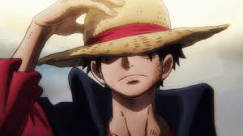
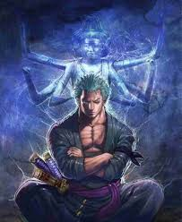
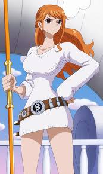
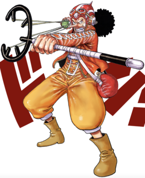
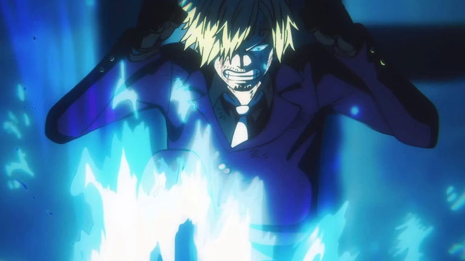
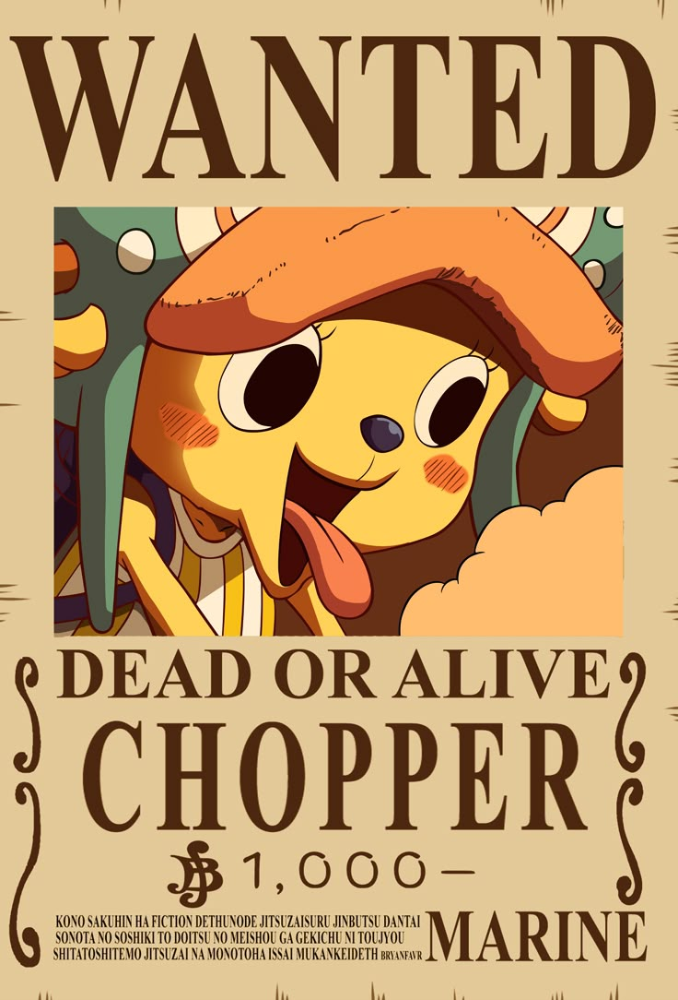
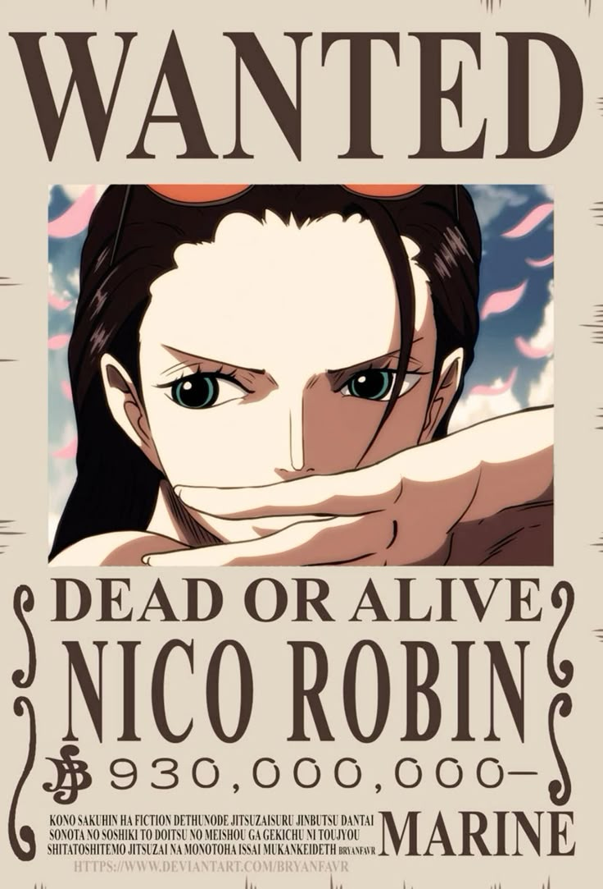
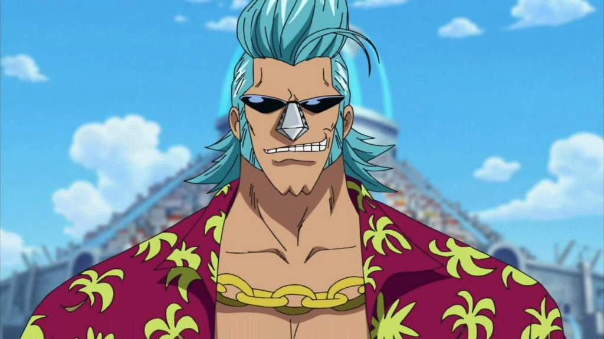
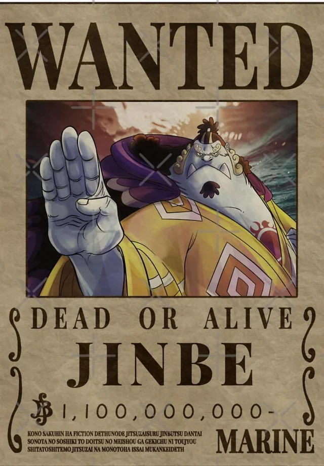

"Mugiwara" (麦わら) en japonés significa "paja de trigo" o "paja de cebada". Sin embargo, en el contexto de la serie "One Piece", "Mugiwara" se traduce comúnmente como "Sombrero de Paja". Este término se refiere al famoso sombrero de paja que Monkey D. Luffy, el protagonista de la serie, usa, y también se usa para referirse a la tripulación de Luffy, los "Piratas del Sombrero de Paja".
El capitán, cuyo sueño es convertirse en el Rey de los Piratas. Fue criado por un bandido de montaña y conoció la piratería gracias a Shanks, quien le inspiró a hacerse pirata. Comió la Gomu Gomu no Mi, una Fruta del Diablo que le dio un cuerpo elástico, y desde entonces comenzó su aventura reuniendo a su tripulación.

El espadachín de la tripulación, cuyo sueño es convertirse en el mejor espadachín del mundo. Antes de unirse a Luffy, era un cazador de recompensas. Usa una técnica de tres espadas y se unió a los Sombrero de Paja al ser salvado por Luffy de una ejecución injusta.

La navegante, cuyo sueño es dibujar el mapa completo del mundo. Inicialmente se unió a Luffy por interés propio, ya que trabajaba para una banda pirata para liberar a su aldea, pero luego se convirtió en una miembro leal. Es experta en navegación y clima.

El francotirador y contador de historias, que sueña con convertirse en un valiente guerrero del mar como su padre. Se unió a la tripulación tras ayudar a liberar su pueblo. Aunque miedoso, demuestra gran valor cuando más se necesita.

El cocinero, cuyo sueño es encontrar el All Blue, un mar legendario con peces de todos los océanos. Fue criado en un barco restaurante y tiene un fuerte sentido del honor. Pelea usando solo sus piernas para proteger sus manos de chef.

El médico de la tripulación, una reno que comió la Hito Hito no Mi, lo que le dio forma y mente humana. Su sueño es curar cualquier enfermedad. Fue rechazado por humanos y renos, pero encontró su lugar con los Sombrero de Paja.

La arqueóloga, cuyo sueño es descubrir la verdadera historia del mundo leyendo los Poneglyphs. Fue perseguida desde niña por el gobierno mundial. Se unió a la tripulación tras ser rescatada y ahora busca el Río Poneglyph con ellos.

El músico esquelético que comió una Fruta del Diablo que le devolvió la vida después de morir. Su sueño es reunirse con Laboon, una ballena que lo espera desde hace años. Aporta alegría y música a la tripulación, además de habilidades con la espada.

El timonel y ex miembro de los Piratas del Sol, es un hombre-pez que sueña con una convivencia pacífica entre humanos y hombres-pez. Admirado por su honor y fuerza, se unió a Luffy tras varios encuentros donde demostró su lealtad y valores.
